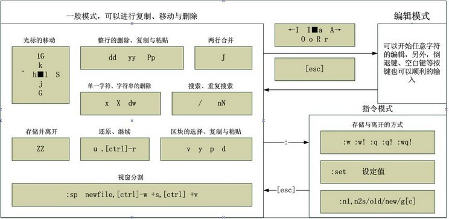

chap10vim程序编辑器
意义
所有UNIX Like系统都会内置vi文本编辑器，其他文本编辑器不一定存在
很多软件的编辑接口都会主动调用vi
vim具有程序编辑的能力，可以主动以字体颜色辨别语法正确性，方便程序设计
程序简单，编辑速度相当快速
vi包括三种模式
一般模式
移动光标、删除字符或整行、复制、粘贴
编辑模式
左下角有INSERT或REPLACE字样
命令行模式
查找数据、读取、保存、大量替换字符、离开、显示行号等功能
vi下的[tab]按键与空格符结果不同
常用命令
一般模式
[ctrl] + [f] / [page down]：下翻一页
[ctrl] + [b] / [page up]：上翻一页
0 / [home]：移动到行首
$ / [end]：移动到行末
G：移动到最后一行
nG：移动到第n行
gg：移动到第一行
N[Enter]：下移N行
/word：向下查找word
?word：向上查找word
:n1,n2s/word1/word2/g：在第n1~第n2行间查找word1并替换为word2
n2可以用$代替，代表最后一行
g若改为gc，表示确认（confirm）模式，每次询问是否要替换
x / [Del]：向后删除字符
X / [Backspace]：向前删除字符
dd：删除整行
ndd：删除以下的n行
yy：复制整行
nyy：复制以下的n行
p：（小写）粘贴到下一行
P：（大写）粘贴到上一行
u：复原前一个操作
[ctrl] + r：重做上一个操作
.：（小数点）重复上一个操作
块选择——
V：字符选择、行选择
[ctrl] + v：长方形的块选择
y：复制选择块
d：删除选择块
从一般模式切换到编辑模式
Insert mode：
i：当前字符处插入
I：本行第一个非空字符处插入
a：下一个字符处插入
A：本行最后一个字符处插入
o：在下一行插入新行
O：在上一行插入新行
Replace mode：
r：只替换当前字符一次后自动退出
R：持续替换字符，直到手动退出
[Esc]：退出到一般模式
从一般模式到命令行模式
:w：保存
:w!：强制写入，主动修改文件权限（如果你能够修改的话）
:q：离开
:q!：强制离开而不保存
:wq：保存并离开
:w[filename]：另存为filename
:! command：暂时离开vi，在终端执行command命令
环境参数设置——
:set nu：显示行号
:set nonu
:set hlsearch：（默认）高亮度查找（匹配字符串反白）
:set nohlsearch
:set autoindent：自动缩排
:set noautoindent
:set backup：主动备份当前编辑的（file）文件为（file~）文件
:set ruler：显示状态栏
:set showwmode：在左下角显示--INSERT--等字眼
:set backspace=[0 | 1 | 2]：退格键模式
0或1为仅可删除刚刚输入的字符
2为可以删除任意字符
:set all：显示所有环境参数设置
:set：显示你手动修改过的参数设置
:syntax on：根据语法对关键词进行不同颜色的显示
:syntax off
:set bg=[dark | light]：颜色色调样式
多文件编辑——
一开始打开文件时就可以同时打开多个文件（空格隔开）
:n：编辑下一个文件
:N：编辑上一个文件
:files：列出目前所有文件
:sp：为当前文件打开一个新窗口
:sp filename：打开另一个文件
[ctrl] + [w] + [j]/[↓]：切换到下一个窗口
组合键用法：先同时按下[ctrl]和[w]，松开后按下[j]或[↓]
[ctrl] + [w] + [k]/[↑]：切换到上一个窗口
[ctrl] + [w] + [q]：关闭当前窗口
也可以切换到该窗口后通过:q关闭
感叹号（!）表示强制
命令前的数字表示“重复几次”或“第几”
编辑过程中，vim会主动在文件目录下创建名为.filename.swap的文件，为文件恢复提供依据
文件错误
问题一：有其他人或程序同时编辑一个文件
问题二：vim环境异常关闭
打开文件时会出现错误信息和以下操作选项：
[O]pen read-only：以只读的形式打开
[E]dit anyway：不载入暂存文件内容，以正常模式打开
但是容易出现多人互相修改对方文件的问题
[R]ecover：加载暂存文件，恢复文件数据
[D]elete it：删除暂存文件
[Q]uit：离开
[A]bort：与Quit差不多
大部分distributions已经用vim替代vi
把vi作为vim命令的别名了！
vim会主动把我们曾经的行为记录到~/.viminfo文件内
整体vim的设置值放置在/etc/vimrc文件内
不过不建议修改，而应修改~/.vimrc文件（如果不存在，可以手动创建）
书写规则
一个值一行
跟命令行设置环境参数形式相同，也可以省略冒号（:）
双引号（"）表示注释
并不是把注释包含起来
只需要在开头写上引号
中文编码的显示
考虑因素
系统默认支持的语系数据，与/etc/sysconfig/i18n文件有关
终端接口的语系，与变量LANG有关
文件原本的编码
打开终端的窗口界面的编码
Windows上的软件经常默认使用big5编码
Linux的tty1~tty6默认不支持中文编码
DOS与Linux的断行字符
“^M”称为CR符号
“$”称为LF符号
DOS采用CRLF作为断行字符（即“^M$”）
Linux采用LF作为断行字符（即“$”）
所以纯文本文件在不同系统上打开需要转换不同的格式
dos2UNIX [-kn] file [newfile]
UNIX2dos [-kn] file [newfile]
-k：保留原本的mtime
-n：保留源文件，将结果输出到新文件newfile
嘿嘿，这里的2就是two表示to哦！
Windows下把文件编辑后不建议直接上传到Linux系统
语系编码转换：iconv
显示：iconv --list
列出iconv支持的语系数据
修改：iconv -f 原本编码 -t 新编码 filename [-o newfile]
-o：保留源文件，新建编码文件
将繁体中文的big5，utf8转换为简体中文的gb2312
iconv -f big5 -t gb2312 **.big5 -o **.gb
将繁体中文的utf8转换为简体中文的utf8
iconv -f utf8 -t big5 **.utf8 | > iconv -f big5 -t gb2312 | iconv -f gb2312 -t utf8 -o **.gb.utf5
